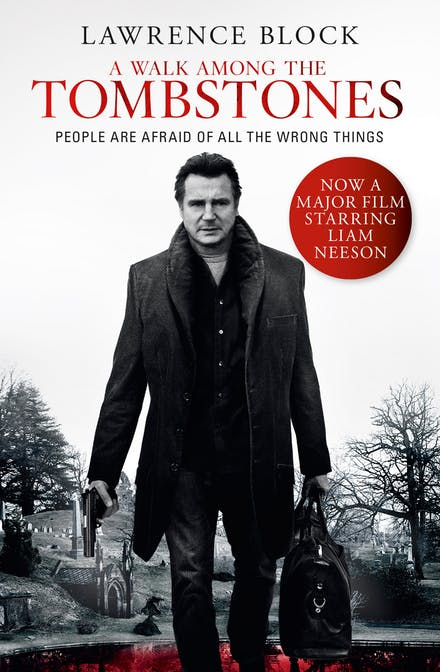

| . A WALK AMONG THE TOMBSTONES |
|  |
|
Written by Lawrence Block (1992) & Directed by Scott (2014)
Language: English
Pages: 318
Publisher: William Morrow & Co; 1st edition (November 1, 1992)
Amazon Best Sellers Rank:
- #984, 401 in Books (See Top 100 in Books)
- #109154 in American Literature (Books)
- #5816 in Hard-Boiled Mystery
Sypnosis: This book is about when a heroin kingpin's wife is kidnapped, he haggles over the ransom and receives her back in pieces, leaving Scudder to track down the killers
|
| 2.MAZE RUNNER - THE DEATH CURE |
|
|
Written by James Dashner (2013) & Directed by Wes Ball (2018)
Language: English
Pages:325
Publisher:Delacorte Press; Later Printing edition (January 8, 2013)
Achievement:
- A #1 New York Times Bestselling Series
- A USA Today Bestseller
- A Kirkus Reviews Best Teen Book of the Year
- An ALA-YASLA Best Fiction for Young Adults Book
Sypnosis: What WICKED doesn’t know is that Thomas remembers far more than they think. And it’s enough to prove that he can’t believe a word of what they say.
Thomas beat the Maze. He survived the Scorch. He’ll risk anything to save his friends. But the truth might be what ends it all.
The time for lies is over.
|
| 3. HUNGER GAMES |
 |
|
Written by Suzzanne. Collins (2008) & Directed by Gary Ross (2012)
Language: English
Pages: 374
Publisher: Scholastic, (2008)
Amazon Best Sellers Rank: #197,086 in Books (See Top 100 in Books)
Sypnosis: In what was once North America, the Capitol of Panem maintains its hold on its 12 districts by forcing them each to select a boy and a girl, called Tributes, to compete in a nationally televised event called the Hunger Games. Every citizen must watch as the youths fight to the death until only one remains. District 12 Tribute Katniss Everdeen (Jennifer Lawrence) has little to rely on, other than her hunting skills and sharp instincts, in an arena where she must weigh survival against love.
|